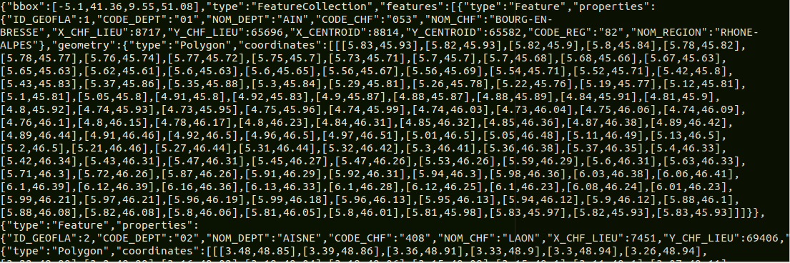

Cette activité sera basée sur un exemple proposé par le site http://www.datavis.fr/.
D3js permet d'exploiter les données contenues dans les fichiers de type GeoJSON (voir cette activité pour plus d'informations sur le geoJSON).
Dans cette activité, nous allons utiliser les données fournies par un fichier de type geoJSON afin de construire une carte de France.
Commencez par télécharger le fichier departments.json
Ouvrez ensuite ce fichier à l'aide d'un éditeur de texte.
Attention : dans la suite de cette activité, le fichier "departments.json" devra être placé dans le même dossier que le fichier "script.js".
Vous devriez obtenir quelque chose qui ressemble à ceci :
Comme vous pouvez le constater, nous avons quelques informations sur chaque département ("CODE_DEPT", "NOM_DEPT"...), mais nous avons surtout une série de couples de valeurs ("[5.8,45.84]"). Ces couples de valeurs sont des coordonnées (longitude, latitude). Chaque couple de coordonnées correspond à un point et l'ensemble de ces points permettent de dessiner les contours des départements.
script.js
var body=d3.select("body");
var svg=body.append("svg");
svg.attr({"width":"600px","height":"600px"});
var path = d3.geo.path();
var projection = d3.geo.conicConformal()
.center([2.454071, 46.279229])
.scale(3000)
.translate([300,300]);
path.projection(projection);
d3.json("departments.json", function(geoJSON) {
var map=svg.selectAll("path").data(geoJSON.features)
map.enter()
.append("path")
.attr("fill","white")
.attr("stroke","black")
.attr("d", path);
});
Analysez et testez ce code
Vous devriez obtenir ceci :
Quelques commentaires sur le programme ci-dessus :
D3js propose une méthode permettant d'exploiter facilement les coordonnées en créant un "path" SVG : var path = d3.geo.path();
Qui dit carte, dit projection, pour en savoir sur cette notion de projection, vous pouvez consulter l'article de Wikipédia ici.
D3js propose différents types de projection (pour en savoir plus sur les projections proposées par D3js, voir ici
Nous utilisons ici la projection conicConformal
var projection = d3.geo.conicConformal()
.center([2.454071, 46.279229])
.scale(3000)
.translate([300,300]);
path.projection(projection);
La suite est classique :
Modifiez le programme vu dans le "À faire vous même 15.2" en faisant varier le facteur de zoom (scale) et le centre de la carte (center).
En repartant de l'exemple du "À faire vous même 15.2", écrivez un programme permettant d'obtenir ceci (passez le curseur de la souris sur la carte) :
Il est possible de "pousser" l'interactivité plus loin :
En vous inspirant des explications fournies sur le site http://www.datavis.fr/, créez une carte où des informations sur les départements s'afficheront en les "survolant" avec le curseur de la souris :
Cette activité est difficile, n'hésitez pas à poser des questions
Le site https://github.com/gregoiredavid/france-geojson/ propose un grand nombre de fichier geoJSON (contours des régions (anciennes versions), des départements, des communes...
Nous allons utiliser ces données pour construire une carte des communes de Haute-Savoie
Après avoir téléchargé l'archive (en cliquant sur le bouton "Download ZIP"), sélectionnez le fichier approprié afin d'écrire un programme permettant d'obtenir ceci :